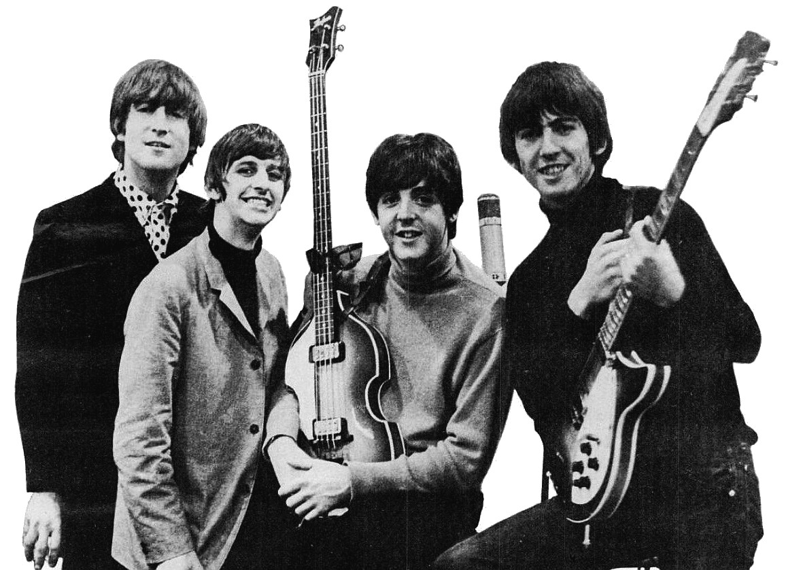
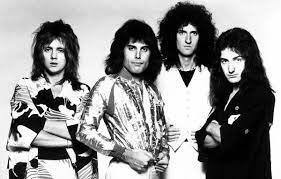

O rock and roll surgiu nos Estados Unidos na década de 1950, com raízes no blues, rhythm and blues e country music.
Nos anos 50 e 60, o rock passou por diversas mudanças e evoluções.

Nos anos 70 e 80, o rock se tornou mais diversificado e experimental.

Nos anos 90 e 2000, o rock continuou a se diversificar e novos subgêneros surgiram.
O rock continua a ser um gênero popular e influente na música.